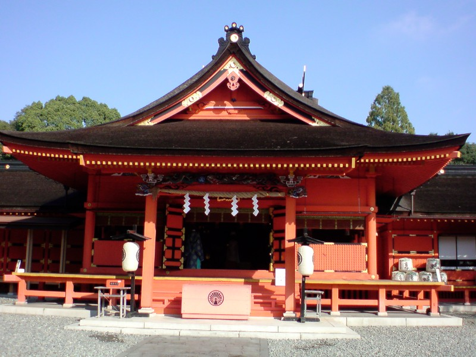
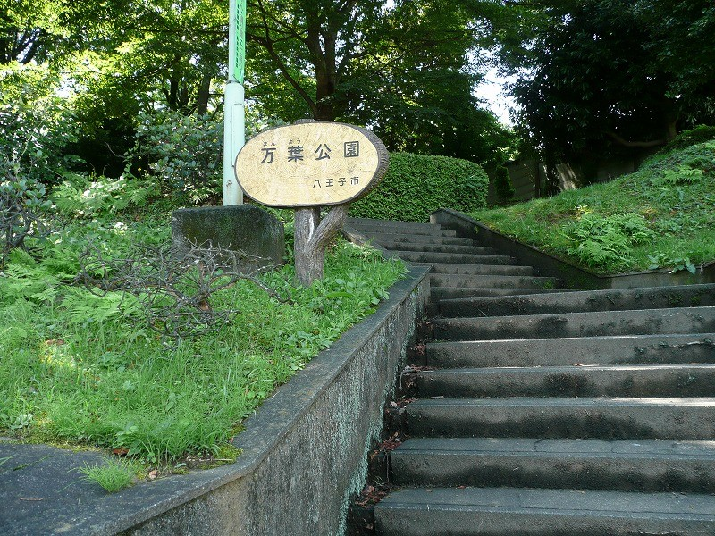
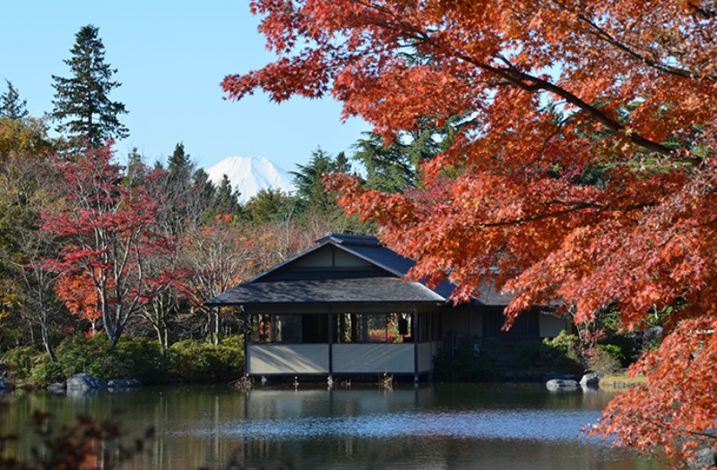
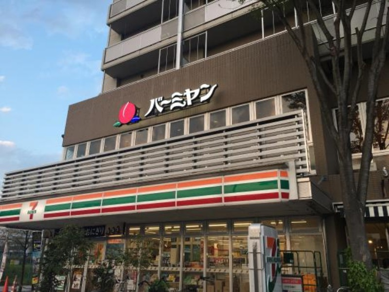

八王子・立川花火大会おすすめスポット
| 八王子花火大会おすすめスポット | |
|---|---|
| 浅間神社 | 冨士森公園内にある神社、自然、花火会場である市民球場との間に、障がいとなるような高い建物がまったくありませんので、市民球場内から見るのと勝るとも劣らない花火が楽しめます。 |
| 万葉公園 | 公園内に展望の開けた小高い丘があるので、花火大会の鑑賞にピッタリ。 |
| 立川花火大会おすすめスポット | |
|---|---|
| 昭和記念公園 | 昭和記念公園には、「あけぼの口」、「昭島口」、「玉川上水口」、「砂川口」、「立川口」、「西立川口」と6つの入口があります。 ほとんどの方がJR立川駅からのアクセスが1番近い「立川口」か「あけぼの口」から入られる方が多く、見物客も1番多くいる場所です。 次にJR西立川駅直結の「西立川口」かと思いますが、この3つの入口はメチャクチャ人混みがすごい入り口です。 |
| バーミヤン | 昭和記念公園に1番近いファミレスが、「あけぼの口」の目の前のビルの2階にある「バーミヤン 立川駅北口」です。 ここから視界が開けているため、花火がとってもよく見える穴場スポットです。 しかし、おそらく朝から場所取りで入られている方も多数いるかもしれません・・。 駅からは徒歩7分でたどり着きますので、始まるまでの休憩スポットとして利用するのもおすすめです。 |
浅間神社

万葉公園
昭和記念公園
バーミヤン
